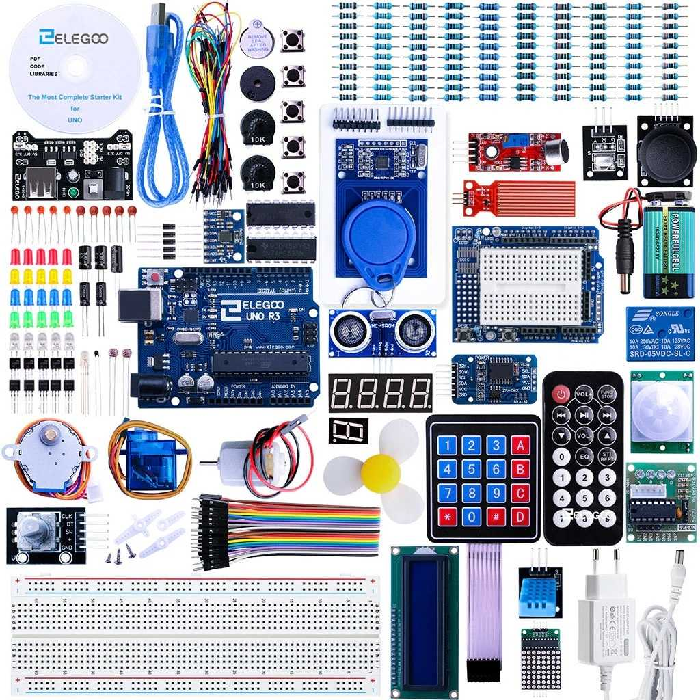

|
Erstellt auf dem Desktop einen Ordner mit dem Namen Physical Computing, in dem ihr eure Dateien, falls nötig, speichern werdet. |
|
| Was ist überhaupt Physical Computing? | |
|
Physical Computing bedeutet, Geräte zu bauen oder zu benutzen, die mit ihrer Umgebung interagieren. Genau das ist unser Ziel. Ihr werdet mit programmierbaren Mikrocontrollern arbeiten und dazu passende Sensoren und Aktoren einsetzen, um interaktive Projekte zu entwickeln. Wir werden im Unterricht mit dem Elegoo UNO R3 arbeiten. Das ist ein Mikrocontroller-Board, das komplett mit dem bekannten Arduino UNO kompatibel ist. Elegoo ist ein Drittanbieter, das heißt, es ist nicht von der offiziellen Arduino-Organisation, funktioniert aber genauso gut |
 |
| Was ist Tinkercad? | |
|
Bevor ihr etwas baut, ist es hilfreich, es zuerst virtuell zu entwerfen und zu simulieren.
Tinkercad ist eine webbasierte Plattform, mit der genau das möglich ist. Hier findet ihr die Zugangsdaten (Domain: @stu.kls-berlin.de) Auf Tinkercad klickt ihr auf Anmelden und dann auf Schüler mit Klassencode. Danach loggt ihr euch mit dem Klassencode und eurem Spitznamen ein. |
|
| Elektrizitätslehre | |
|
Bevor ihr mit einem Mikrocontroller arbeitet, ist es wichtig, dass ihr die Grundlagen der Elektrizität kennt. Also: Spannung, Strom und Widerstand. Schaut euch diese Lernvideos an, damit ihr gleichzeitig die Tinkercad-Funktionalität und die Grundlagen der Elektrizitätslehre versteht. |
Lernvideos |
|
Macht die Schritte mit und schaut die Videos nicht nur passiv an. Wenn die Grundlagen nicht sitzen, seid ihr bei komplizierteren Schaltungen später schnell durcheinander. Arbeitsauftrag 1 Für jede Schaltung aus den Videos erstellt ihr einen separaten Entwurf in Tinkercad und speichert ihn mit einem passenden Namen, zum Beispiel LED Vorwiderstand für die Schaltung aus dem Video über LED und Vorwiderstand. |
|
| Was ist überhaupt ein Mikrocontroller? | |
|
Ein Mikrocontroller ist ein Ein-Chip-Computersystem. Das bedeutet, es ist ein kleiner Computer, bei dem alle wichtigen Teile auf einem einzigen Chip sitzen. Im Vergleich zu einem normalen Computer ist ein Mikrocontroller aber viel weniger leistungsstark. Der große Vorteil von Mikrocontrollern ist, dass sie genau für eine bestimmte Aufgabe entwickelt werden können. Außerdem sind sie sehr günstig, was sie ideal für viele einfache Anwendungen macht. Wir werden mit dem Arduino-Mikrocontroller arbeiten! |
Beispiel Ein Trockner in der Toilette enthält oft einen Mikrocontroller. Der Mikrocontroller bekommt ein Signal vom Bewegungssensor, wenn jemand die Hände darunter hält Dann startet er den Motor, der warme Luft bläst, und stoppt ihn wieder nach ein paar Sekunden. Der Mikrocontroller steuert also den kompletten Ablauf vom Erkennen der Bewegung bis zum Ausschalten des Trockners. |
| Der Arduino-Mikrocontroller (oder seine Clones) | |
|
LEDs mit Arduino steuern Ihr werdet mit Hilfe des Arduino LEDs zum Blinken bringen und gezielt steuern. Zuerst werdet ihr alles auf Tinkercad umsetzen. |
Lernvideos |
|
Arbeitsauftrag 2
Für jede Schaltung aus den Videos erstellt ihr einen separaten Entwurf in Tinkercad und speichert ihn mit einem passenden Namen, zum Beispiel LED Fade In für die Schaltung aus dem Video über das Programmieren eines LED Fade-In-Effekts. |
|
|
Arbeitsauftrag 3
Erstellt eine Schaltung mit zwei LEDs, die abwechselnd blinken. Wenn die eine an ist, ist die andere aus und umgekehrt. Speichert euren Entwurf unter dem Namen Wechselblinker. |
|
|
Zusatzaufgabe
Recherchiert selbstständig, was eine 7-Segment-Anzeige ist, wie sie funktioniert und wie man sie mit dem Arduino ansteuern kann. Erstellt anschließend eine Schaltung mit einer 7-Segment-Anzeige. Lasst euch zuerst die Ziffer 4 anzeigen. Programmiert danach einen Countdown-Zähler, der in Sekundenschritten von 9 bis 0 zählt. Achtet darauf: Ihr müsst alle Anschlüsse der 7-Segment-Anzeige mit dem Arduino verbinden. Das sind in der Regel bis zu 10 Pins. Speichert euren Entwurf unter dem Namen Countdown9_0. |
|